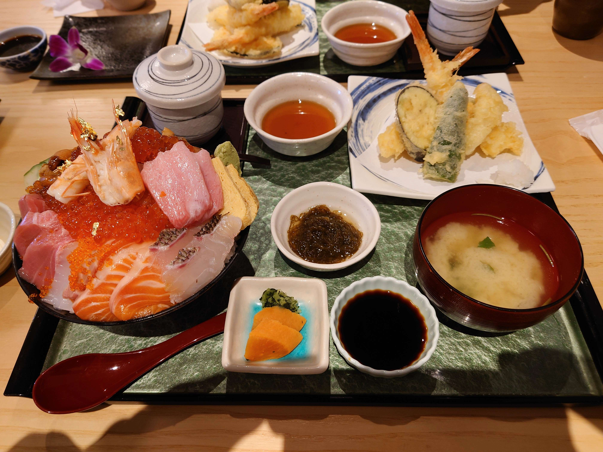
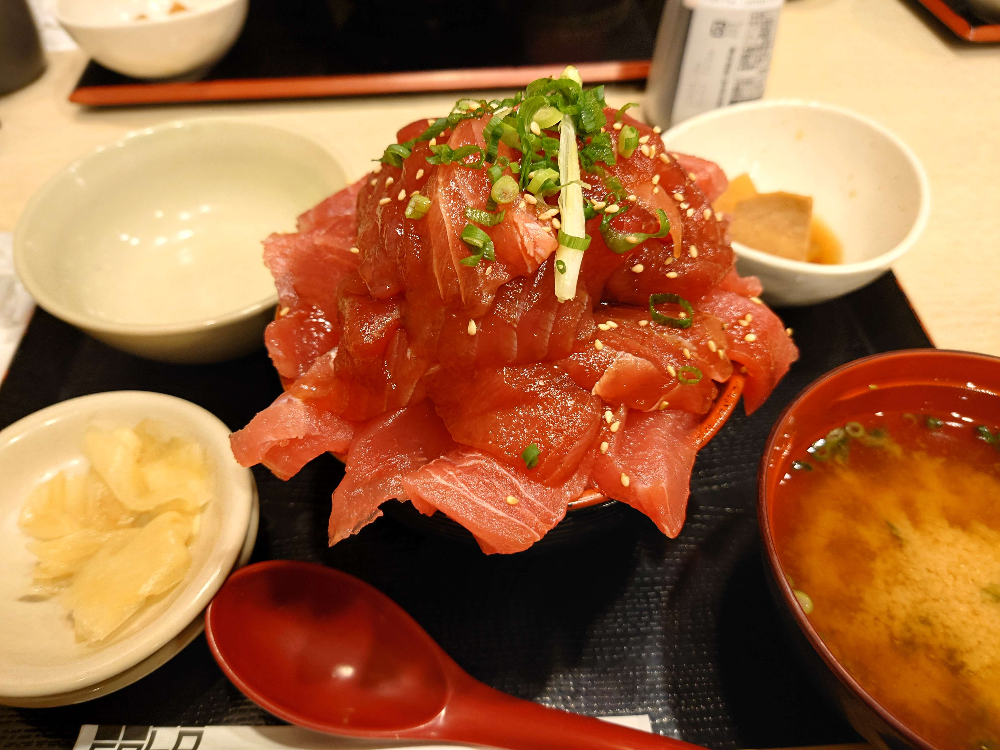
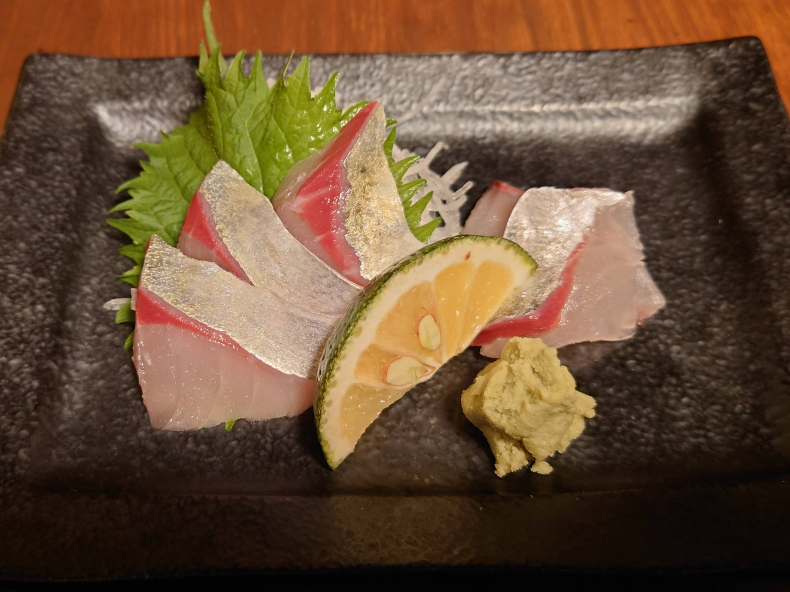
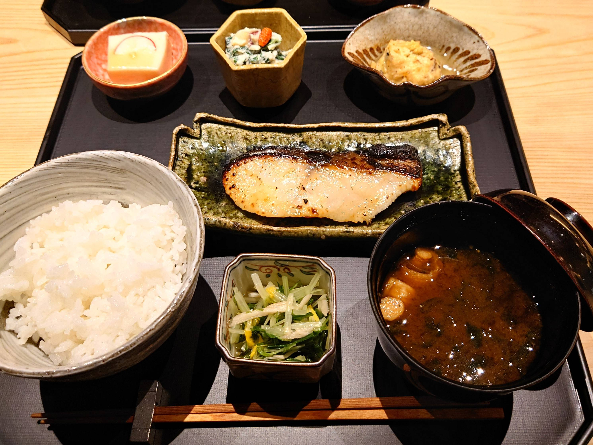
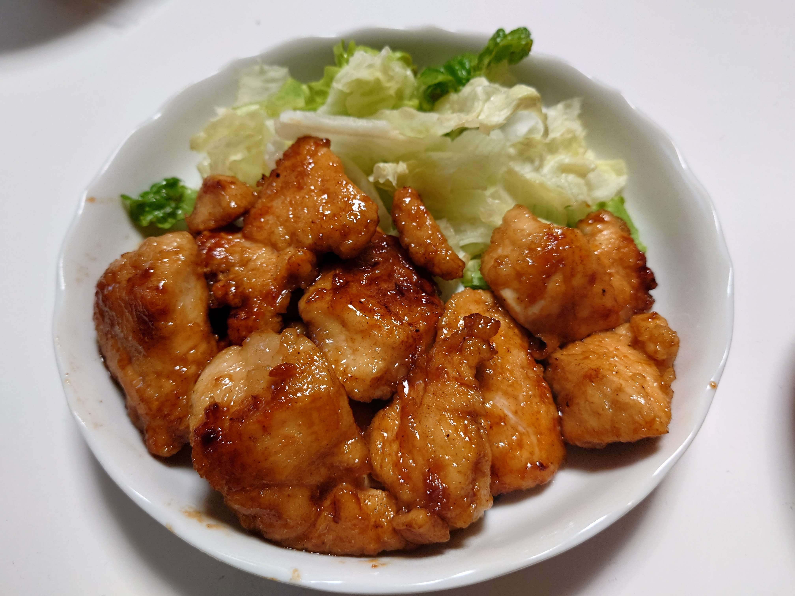
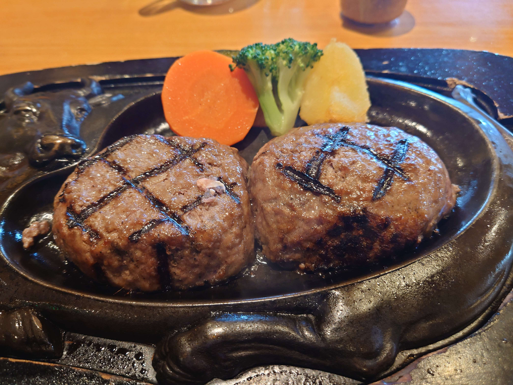

好きな食べ物
麺
「私の主食は麺だ」と言えるほどよく麺を食べており、朝ごはんは「パン派」でも「ご飯派」でもなく「麺派」です。
写真は無いのですがラーメン、パスタ、うどん、そうめんなど蕎麦以外の麺が大好きで1日に1食は麺を食べている気がします。
魚
私は肉より魚が好きで、特に寿司や海鮮丼など生で食べるのがすきです。




肉
魚の方が好きだとは言っても肉も好きです。
特にチキン南蛮と、「炭焼きレストランさわやか」のハンバーグは大好きです。

